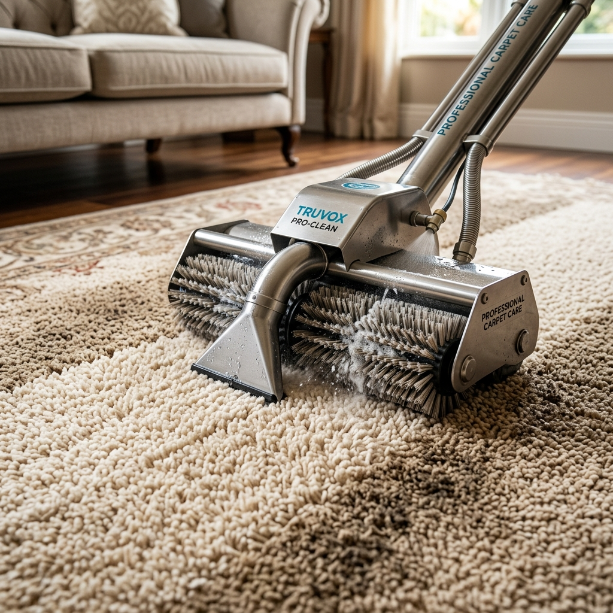

Profesyonel halı yıkamada ön kontrol, toz alma, leke ön işlemi, ana yıkama, durulama, kontrollü sıkma ve kurutma adımları uygulanır.
Makine halıları ile el dokuma halılar aynı teknikle temizlenmez. Lif yapısı, boya dayanımı ve dokuma sıklığı dikkate alınarak yöntem belirlenmelidir.
Halı Koltuk Yıkama halı tipine göre teknik seçimi yaparak hem temizlik hem de ürün güvenliği sağlar.